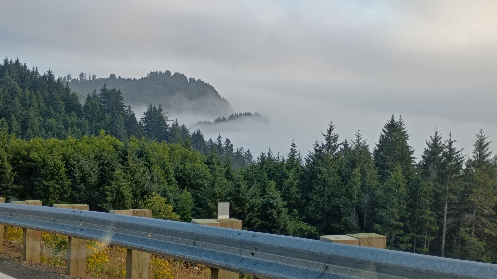

ope...a life
Two dragonfly friends! (Very fast!)
I was headed to lunch when I saw a coworker at the circ desk shaking something in their hand. "Come on over," they said, "I need your help."
I moseyed over and saw they were holding a cube. 2 inches by 2 inches by 2 inches. Hollow except for the 1/2 inch tall plastic bottom on the inside with three concentric, ridged circles and a metal ball about a 1/4 inch around. It was a child's game. The goal was to get the metal sphere to sit in the smallest, center circle.
"Do you know how to solve this?" They asked.
I grabbed it. Shook it. Failed to solve it. "'fraid not. Sorry, I've never been any good at those kinds of puzzles." I looked closely at my coworker. "You look like you need a break from it, though. Want me to take it off your hands for an hour or so? Kid's toy timeout?"
The coworker looked relieved. "Take it home and don't bring it back," they said, then handed it to me.
I turned, shook it, and the ball fell into the center circle, so I made a detour and placed the game on the coworkers chair before heading out for lunch.
Sometimes a bee will hit our big window overlooking the backyard and I have to wonder...did a bee just prank another bee?
Like, maybe Robbie the bumble bee was doing his waggle dance but instead of telling the other bees to turn left at the deck he tells them to turn right? And maybe after a couple of bees fly off Robbie says to all the other bees, "No no no guys. Don't go yet. Ya gotta see this!" and all the bees watch as eager beaver Toby, the first one to fly off, natch, smacks into our window?
Do bees snicker? I bet bees snicker.
Or maybe Robbie can't waggle dance. Robbie's got no rhythm. So Robbie meant to tell all the bees the proper place to go but when they all took off, Toby (that eager beaver, again) led the way and ran smack dab into our window. All the other bees would just shake their antennae and say, "Yup, that's Robbie for ya, can't waggle for shit," before they swooped down to make sure Toby was okay?
Went back to Netarts with Stacy yesterday evening so she could see this in person, but it was a little too foggy for the sun to break through properly. Bummer, but it was still a pretty drive. We got up above the fog and, well, the view wasn't too shabby:

They really are the same, the two parties.
Republicans made internment camps. So did Democrats. More than once. Sometimes they did it together.
Republicans made the USA Patriot Act (Bush). Democrats expanded and codified it under the US Freedom Act (Obama). Both Bush and Obama greatly increased domestic surveillance and consolidated power in the executive branch.
The DNC stated, in a court of law, that they are not beholden to voters, "and we could have voluntarily decided that, Look, we're gonna go into back rooms like they used to and smoke cigars and pick the candidate that way. That's not the way it was done. But they could have."
Both Democrat- and Republican-led cities where police murder people (George Floyd, Justine Diamond, Breonna Taylor, Daniel Shaver, and Philando Castile to mention a very very very few) with no change made to police departments.
Tuskegee Syphilis Study from 1932 to 1972 - decades of Republicans and Democrats in power.
The coups we instigated and treaties we broke over the centuries for oil and bananas and oil and rubber and oil and land and oil? Republicans and Democrats.
For the most part, the people we elect don't respect us, we're just labor for their economic engines.
Voting for either party over the years has gotten us exactly where we are today.
Golden hour. Netarts.
Sunday 10 August 2025
Miles riding: 372. Especially nice ride yesterday.
Hours writing: 0. Drat. Though I did find an old piece I'd been looking for for years: 'Twas the Night Before Christmas. It's a little on the mean side of things but I really enjoy it. Glad I finally found it.
Notable patron interactions:
During online searches I've been using Bing more than Google lately. The results are better and Google has taken to ignoring basic search parameters (-, "", etc). This has been happening more and more lately.
More work on archivio.antico: Herbie, Election 2004, and Rutabaga v2.
Decided against moving for now. No Boise and no Flagstaff for us. We have a pretty good life and trying to make it even better by moving to a new place is too much of a gamble. Big risk for minimal gains. We'll continue taking day and weekend trips. We might still move back to the Twin Cities, though, should I ever get a job offer there.
Decided against embedding offsite media (think youtube vids and the like). Much better privacy-wise. Went through and changed all old embeds with links. Still occasionally embed local media.
Father memory: Letting me steer the car (from the passenger seat (when I was in grade school)) after swim practice at the high school.
Snowflake memory: using my suitcase as a bed so often I had to get a second suitcase.
Went for a 200 mile ride today - up 101, over the Coastal Range, up through the Coastal Range, back over the Coastal Range, then down the coast to home. Lots of fun riding and pretty scenery.
Up over Oregon Route 6 is one of my favorite rides over the Coastal Range. Well, I lie a little here, they're all my favorite, but they're all favorites for different reasons. Hwy 6 is my favorite because I can hustle through the twists and uneven roads better than most anything on four wheels, so when I ride it on a weekend during the summer with all the tourists heading to and from the coast there's lots of passing to be had.
Vroom.
Today I caught up to a loaded down (lots of luggage on the pillion seat and sissy bar)Harley Softail (not sure which). Woo! They were hustling that cruiser through the curves and around cars like nobody's business.
I used to have a Victory Boardwalk, so I have an appreciation for how they were handling their bike.
I was enjoying their riding so much I tucked in behind them and watched the show. They'd stand (must've had mid-controls, not forwards) over the worst of the uneven broken pavement and around curves without slowing; all the more impressive knowing they must've had only three(ish) inches of suspension travel (to my eight). And their lean angle? On a Harley like that? Almost nonexistent, and it slowed them down very little.
Eventually I had to get off 6 to continue my little trip. I caught up with them, threw a shaka, and went on my way.
And Mabel? Continues to impress. Oodles of ground clearance. Gobs of lean angle. Cruises around politely and hustles with a flick of the throttle.
No jury duty for me.
Disqualification Request Result - Lincoln County Circuit Court Your disqualification was granted. You're no longer required to report for jury. For questions, please contact the court.
Man. So uncool. I tried rewatching Star Trek: Deep Space Nine the last couple nights.
I couldn't do it.
Didn't enjoy it.
I mean, it was neat to see the characters again. Actors did a great job acting. Characters were nifty. Sisko? Great! Garak? Fabulous! Dukat? Love to hate to love him! Kira? Spicy! Dax? Fun!
But, I just didn't care? I can't decide if it's because the plots seemed so contrived (and I know it's always been that way) or if it's because it's such an accurate reflection of what's happening today (we're living it, yo), but I just couldn't.
Watched the first six episodes. Skipped around a bit in seasons two and three. Watched the first couple episodes when Sisko shaved his head. Dominion war! Founders! Maquis! Klingons!
Nothing.
It's a sad, sad day, my friends. A sad day, indeed.
In the early days of the web, pages were made primarily by hobbyists, academics, and computer savvy people about subjects they were personally interested in. Later on, the web became saturated with commercial pages that overcrowded everything else. All the personalized websites are hidden among a pile of commercial pages. Google isn't great at finding them, its focus is on finding answers to technical questions, and it works well; but finding things you didn't know you wanted to know, which was the real joy of web surfing, no longer happens. In addition, many pages today are created using bloated scripts that add slick cosmetic features in order to mask the lack of content available on them. Those pages contribute to the blandness of today's web.
The Wiby search engine is building a web of pages as it was in the earlier days of the internet. In addition, Wiby helps vintage computers to continue browsing the web, as pages indexed are more suitable for their performance.